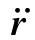
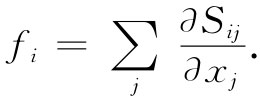
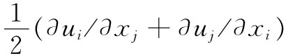
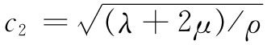
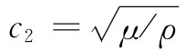
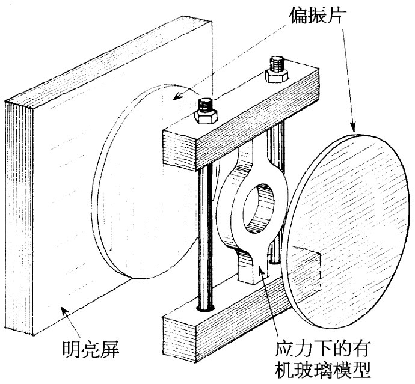

图39-5 由表面A所包围的一个小体积元V
我们已经指出，处于平衡中 的弹性体其内应力自身会做调整，以使其能量极小。现在来做一番考察，当内力不平 衡时会发生什么情况。让我们假设，在某个表面A内有一小块材料，参见图39-5。如果这一块处于平衡之中，则作用于其上的总力F就必然为零。可以设想，这一个力是由两部分组成的。一部分可能是由像重力那样的“外”力引起的，它是从远处作用于该块材料而产生的单位体积的力 f外 。而总外力F外 就是这f外 对整块材料体积的积分：
F外 =∫f外 dV. （39.23）
平衡时，这个力会被来自附近材料对整个表面A作用的总力F内 所抵消。当这块材料不是 处于平衡中时——如果它在运动——则这个内力与外力之和就应等于质量乘以加速度。我们应有
其中ρ为材料密度，而 为其加速度。现在我们可以把式（39.23）和（39.24）两者结合起来，从而写成
这一定义来简化我们的写法。于是，式（39.25）可以写成
F内 =∫V fdV. （39.27）
被称为F内 的这个积分与材料内的应力有关。该应力张量Sij 曾（在第31章中）被这样定义，使得跨越单位法线为n的一个表面元da的力dF的x分量由下式给出：
dFx =（Sxx nx +Sxy ny +Sxz nz ）da. （39.28）
于是作用于那一小块材料上的F内 的x分量，就是dFx 对整个表面的积分。将此式代入式（39.27）中的x分量中，得
∫（Sxx nx +Sxy ny +Sxz nz ）da=∫V fx dV. （39.29）
我们已有面积分与体积分的关系——而这就使我们想起曾在电学中学过的某种东西。注意，如果忽略式（39.29）左边每个S的第一个下脚标x，那么它看来就恰好像量“S”·n——即一个矢量的法向分量——对整个表面的积分。它应该是从该体积流出去的“S”的通量。而倘若利用高斯定律，则可以写成“S”的散度的体积分。事实上，无论该x脚标存在与否，它总是正确的——它仅是你可以通过分部积分而得到的一个数学定理。换句话说，我们可将式（39.29）改写成
现在就可以去掉那些体积分，而把f一般分量的微分方程写成：
 （39.31）
上式告诉我们单位体积的力如何同应力张量Sij 联系起来。
关于固体内部运动的理论就是这样做出来的。如果从认识初位移——比如说，由u所给出——着手，则可以算出eij 。从这些应变又可以根据式（39.12）而得到应力。从这些应力可以得到式（39.31）中的力密度f。一旦知道了f，就可以根据式（39.26）获得材料的加速度 ，这会告诉我们位移将如何变化。把所有结果都聚集在一起，便会得到关于弹性固体的可怕的运动方程。我们只写出对各向同性材料所得到的结果。如果你用式（39.20）表示Sij ，并将eij 写成 ，则你最后会得到这样一个矢量方程：
f=（λ+μ）▽（▽·u）+μ▽2 u. （39.32）
事实上，你能够看出f与u相联系的方程必然 会具有这种形式。力必然取决于位移u的二次微商。由u的二次微商构成矢量的到底有哪些呢？其一是▽（▽·u），那是一个真正的矢量，仅有的另一个矢量是▽2 u，因此最普遍的形式为
f=a▽（▽·u）+b▽2 u，
它就是式（39.32），只是常数的定义不同而已。你可能会觉得奇怪，为什么我们没有用到▽×▽×u作为第三项，因为它也是一个矢量。但要记住，▽×▽×u同▽（▽·u）-▽2 u是同一件事，因而它就是我们所有的两项的一个线性组合。把它加进去不会增加任何新东西。我们再一次证明了各向同性材料只会有两个弹性常数。
对于这种材料的运动方程，可以令式（39.32）等于ρ∂2 u/∂t2 ——目前略去任何像重力那样的彻体力——并得到
它看来有点像我们以前在电磁学中曾有过的波动方程式，只不过有一个附加的复杂项。对于弹性处处相同的材料，按下述办法可以弄清楚其一般解的表现形式。你会记得，任何矢量场都可以写成两矢量之和：一个矢量的散度为零；另一个矢量的旋度为零。换句话说，我们可令
u=u1 +u2 ， （39.34）
其中 ▽·u1 =0， ▽×u2 =0. （39.35）
用u1 +u2 代替式（39.33）中的u，我们得
ρ∂2 /∂t2 ［u1 +u2 ］=（λ+μ）▽（▽·u2 ）+μ▽2 （u1 +u2 ）. （39.36）
可以通过取这一方程的散度而消去u1 ，
ρ∂2 /∂t2 （▽·u2 ）=（λ+μ）▽2 （▽·u2 ）+μ▽·▽2 u2 .
由于算符（▽2 ）和（▽·）可以相互交换，所以我们能将散度作为一个公因子提取出来，从而得
▽·｛ρ∂2 u2 /∂t2 -（λ+2μ）▽2 u2 ｝=0. （39.37）
由于根据定义▽×u2 =0，所以整个括号｛ ｝的旋度也等于零，因而该括号本身就恒等于零，即
ρ∂2 u2 /∂t2 =（λ+2μ）▽2 u2 . （39.38）
这是以速率 运动的波满足的矢量波动方程。由于u2 的旋度为零，所以就没有任何剪切与这种波有联系。这种波正好是上一章中曾经讨论过的那种压缩——声音型的——波，而其速度就恰恰是我们曾求得的c纵波 。
同样地——通过取式（39.36）的旋度——我们能够证明u1 会满足方程
ρ∂2 u1 /∂t2 =μ▽2 u1 . （39.39）
这又是具有速率 的波之矢量波动方程。由于▽·u1 为零，所以u1 不会产生密度变化，这个矢量u1 相当于上一章中我们曾见过的那种横波或剪切型波，而c2 =c切变波 。
要是我们希望知道各向同性材料中的静应力，原则上可以通过令f等于零——或等于像来自重力ρg的那种静彻体力——在与施于该大块材料的表面上的力有关的一些条件下，求解方程式（39.32）而找到。这比电磁学中的相应问题更困难一些。之所以较难，首先由于方程的处理稍微困难；而其次，则由于我们很可能感兴趣的弹性体的形状通常更加复杂。在电磁学中，我们所感兴趣的常常是环绕像柱体、球体等相对简单的几何形状来求解麦克斯韦方程组，因为这些都是电学设备的合适形状。在弹性学中，我们希望分析的东西却可能具有十分复杂的形状——像曲柄钩、汽车里的曲轴或汽轮机的转子。应用我们以前曾提及的最小能量原理，这样的问题有时可以通过数值计算法近似地算出。另一种办法是采用物体模型，利用偏振光在实验上测量内部的应变。
工作是这样进行的：当一种透明的各向同性材料——例如，一种像留西特那样的透明塑料——被置于应力之下时，它就变成双折射。如果你使偏振光穿过它，则偏振面会被旋转一个与应力有关的角度。通过测量这个旋转角度，你就能测出该应力了。这样的装置看起来会如图39-6所示的样子。图39-7则是处于受力状态下的复杂形状的光弹模型的照片。
|  | |
| 图39-6 用偏振光测量内应力 | 图39-7 从两块互相交叉的偏振片间所看到的处在受力状态的一件塑料模型［转载自Sears F W. Optics ，1949］ |